There are birthdays you mark with a dinner reservation, and there are birthdays you mark with a glacier. For my husband's fiftieth, we chose the glacier, several of them, and brought our two kids, then eleven and thirteen, along for the whole magnificent thing. Nine days, one rented SUV, and a big loop out of Anchorage that somehow managed to feel like five different trips stitched into one.
The truth is I barely planned this one, which anyone who knows me will tell you is deeply out of character. It came together at the last minute. I was hunting for somewhere we could fly to in just a few hours without spending a fortune, somewhere that still had availability, and Alaska kept rising to the top of the list.
But there was a deeper reason, and it started at Minam. That little lodge in the Wallowas had genuinely changed me, the dinner bell, the shared tables, the way a place with no cell service turns strangers into friends. I came home wanting more of exactly that, and I went looking for adventure lodges where you feel part of a community instead of just a guest. Alaska, it turns out, has two spiritual cousins to Minam, both tucked inside the very wilderness we would be traveling through.
The first is Ultima Thule Lodge, five cabins a hundred miles from the nearest road, fly-in only, buried deep in Wrangell-St. Elias, the exact park we would later see from a tiny plane. The second is Kenai Fjords Glacier Lodge, the only lodge inside Kenai Fjords National Park, where the four-course dinners are served family style at one long shared table. Both are all-inclusive in the Minam way. You arrive, and you are simply fed and folded in.
In the end we didn't stay at either one. We were on limited time and wanted to see as much as we could, moving on every day or two rather than settling into one place, so those lodges went onto the someday list. But they are what pointed us toward Alaska in the first place, and that turned out to be more than enough.
I'll be honest, I wasn't sure how we would all take to Alaska, we're beach people at heart when it comes to vacation. What I didn't expect was how completely it would win all four of us over, and how the wildest, most remote days turned out to be the ones the kids still talk about. One of them fell asleep on a guide's shoulder after we ate lunch from a kayak, a glacier calving into the water all around us. We drank hot chocolate made with glacier water while hiking on the glacier itself. We saw beluga whales, orcas, sea otters, and puffins, and watched a bear play with a stick like a dog. By the end, none of us wanted to leave.
We drank hot chocolate made with glacier water while hiking on the glacier itself.
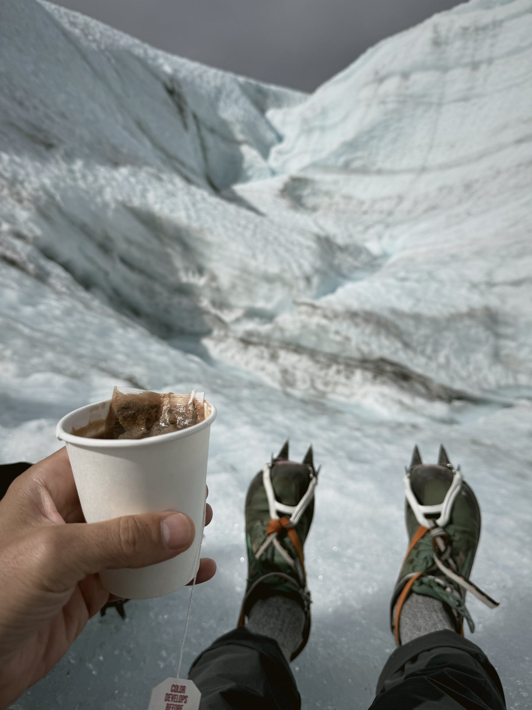
Before You Go
We went in late August, which turned out to be a sweet spot, the summer crowds thinning, the light still long, the first hint of fall creeping in. We drove the whole loop ourselves in a mid-size SUV, which is really the only way to do Alaska like this. The distances are big and the payoff is all in the in-between, the pull-offs, the wildlife on the roadside, the little towns.
A few things I'd tell a friend. Book ahead, especially the big tours and the lodges, because the good ones fill up and Alaska is not a place you want to wing. Keep your food expectations reasonable too. It was good, just not Portland-level, with a few happy standouts, the king crab, sourdough, fresh halibut straight off the boat, plus the reindeer sausage everyone tells you to try. You meet a lot of fishermen (and women), and you'll quickly notice half of Alaska wearing the same thing on their feet, XtraTuf, the brown rubber boots that double as the state's unofficial sneaker. And layers, always layers. It stays cold and brisk, but then the sun comes out and surprises you, so you want to peel down to a t-shirt and bundle back up an hour later.
The one big thing we skipped was Denali. A neighbor who lives in Anchorage year-round talked us out of trying to squeeze it in, and I'm glad he did. Denali is so tall and so isolated that it makes its own weather, and only about a third of visitors ever see the peak, the rest just see the cloud where it should be. To catch it in its full glory you really want several days and a bit of luck, and we had neither to spare this time. It went onto the list for a trip of its own.
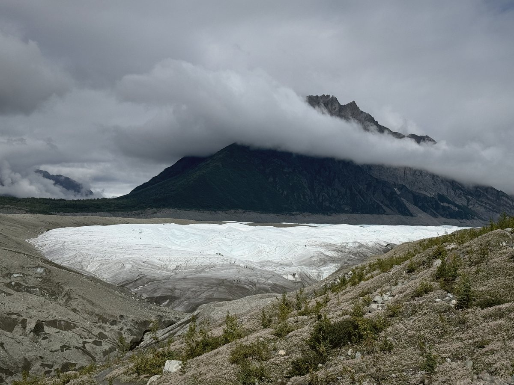
Anchorage
We landed in Anchorage and eased in gently. We walked the Tony Knowles Coastal Trail along the water, stretched our legs, and let it sink in that we were here.
In Anchorage we got our bearings. As the resident mama bear, already a little worried about what we were walking into, the first thing I did was march us into REI for air horns to clip onto our packs, just in case we met a real one on the trail. We ate pizza one night and some genuinely great Thai the next, and wandered a downtown that is flatter and more low-key than I expected, with mountains sitting right at the edge of it. Anchorage has that in-between quality of a city with real wilderness pressing in on every side, the Chugach Mountains on one horizon, Cook Inlet on the other, floatplanes buzzing overhead. It is a good place to land and get your act together before the wild parts begin.
Down Turnagain Arm to Girdwood
The drive out of Anchorage toward Alyeska hugs Turnagain Arm, and it might be the most scenic drive we've ever done. We didn't manage to catch the bore tide, that strange single wave that rolls up the inlet as the tide turns, but along the way we kept spotting paddleboarders out on the water and couldn't work out what they were all waiting for. It wasn't until later that we understood. They were there for the miles-long ride of the bore tide, waiting for that one wave to arrive like a river running backwards.
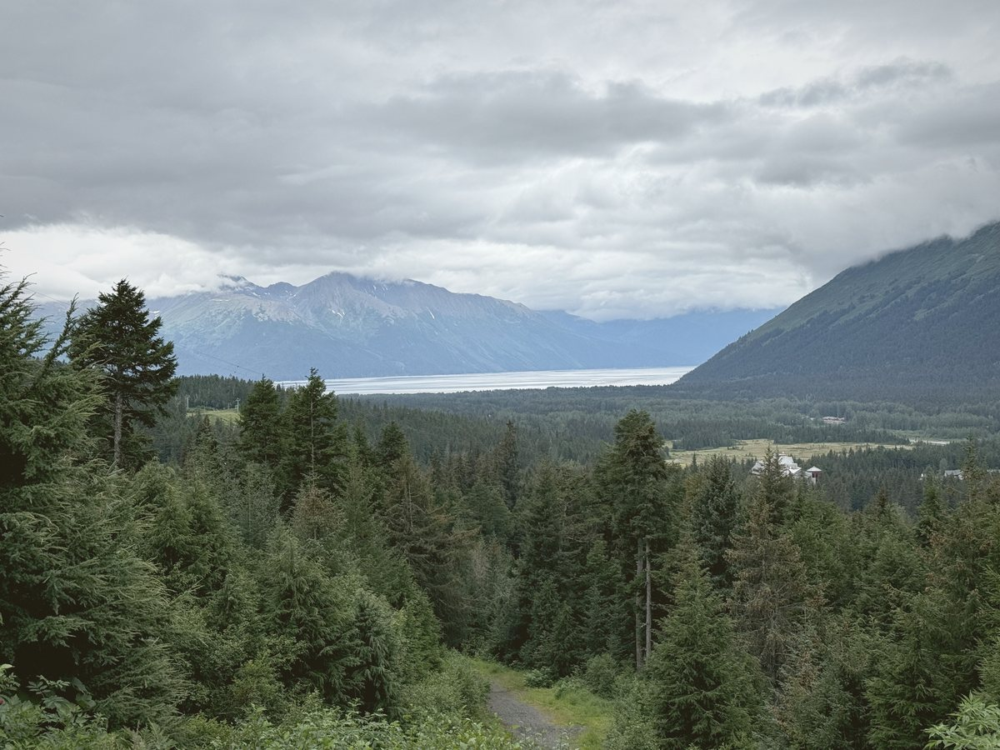
The belugas were pure luck, or maybe pure FOMO. We came around a bend and saw a dozen cars pulled over in the little gravel turnouts, people climbing out and picking their way over the railroad tracks toward the cove along the shore. We had no idea what we were in for, we just pulled over too because everyone else had. And then we saw it, a slow roll of grey breaking the surface, over and over, a pod of beluga whales making their way up Turnagain Arm. Pale backs turning through the water, right there below the road. We stood with a crowd of strangers, all of us pointing, none of us quite believing what we were watching.
Alyeska sits above Girdwood, a small, funky ski-and-snowboard town with crisp mountain air, water and glaciers in view, and outdoors energy in every direction. There were mountain bikes, trails climbing into the peaks, and a tram lifting people up the mountainside. It has the laid-back, hippie-ish feel of a place that exists for the outdoors, a former gold-mining settlement turned ski town at the foot of Alaska's biggest resort, tucked into a green, almost rainforest-like valley. We loved poking around it.
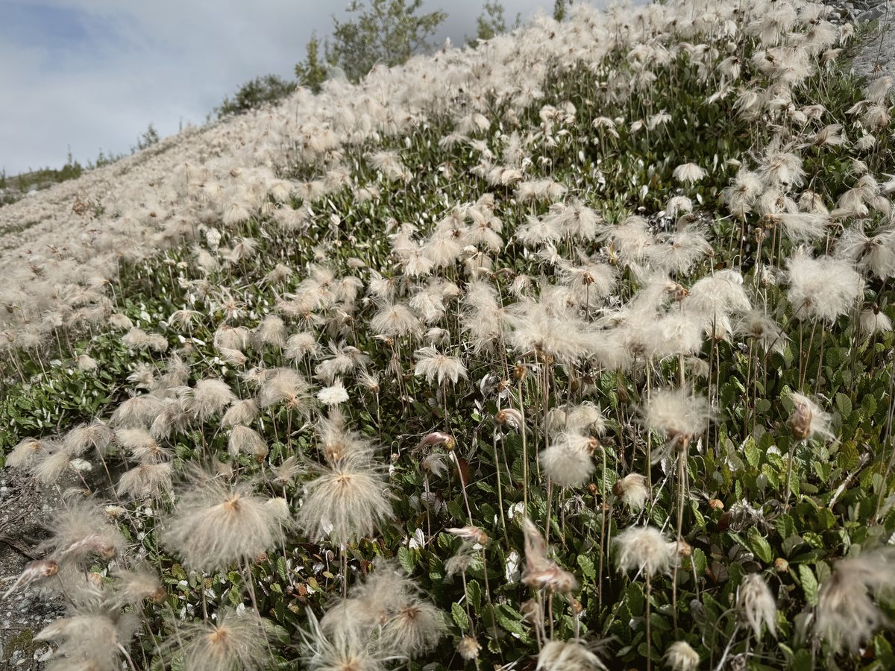
Alyeska
Alyeska is where the trip took its first turn toward the indulgent. We hiked up the mountain, the whole valley falling away beneath us, and rode the tram back down, exactly the right trade, earn the view on the way up, coast on the way down.
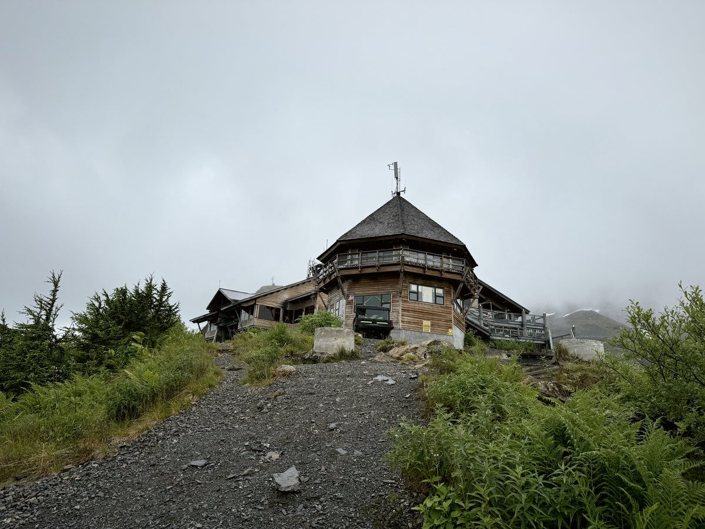
In the evening the two of us slipped away to the Nordic spa while the kids stayed back and had the time of their lives ordering room service. And we, well, we found nirvana. The whole place is built around the Scandinavian ritual of hot and cold, a beautifully designed, more planned version of the old Swedish tradition. You move through a slow circuit of steaming hydrotherapy pools, dry saunas and eucalyptus steam, then the shock of a cold plunge, and back again, round after round, each one leaving you looser and quieter than the last. It is all outdoors and open to the mountains, so you are sunk in hot water with cold air on your face and evergreens and rock all around you. When you want a break there is a little lounge attached to the spa where you can sit in your robe and order something to eat and drink before slipping back into the water. We stayed until the light went long and gold over the peaks.
Toasting fifty with the whole valley glowing outside felt exactly as big as the occasion deserved.
The big birthday dinner was up at Seven Glaciers, the restaurant you reach by riding the tram to the top of the mountain, ice and rock spread out below the windows. It is the kind of place that could coast on the view alone, and plenty of restaurants in a setting like that would. This one didn't. The food held up to the scenery, which up here is saying something, and toasting fifty with the whole valley glowing outside felt exactly as big as the occasion deserved.
There's plenty more to fill a summer day around Alyeska and Girdwood, lift- and trail-served mountain biking, longer alpine hikes off the top of the tram, the Bird to Gird trail tracing Turnagain Arm, the Winner Creek Trail out to the gorge where a hand tram once carried hikers high over Glacier Creek (a suspension bridge is on the way to replace it), gold panning at the old Crow Creek Mine, glacier flightseeing and helicopter tours, even paragliding off the mountain for the braver among us. We didn't do any of it this time around. What we did do, we loved.
The Wildlife Preserve and the Bears
Somewhere in this stretch we stopped at the Alaska Wildlife Conservation Center, a sanctuary in Portage at the head of Turnagain Arm where rescued and orphaned Alaska animals live on wide, open ground you drive and walk around. The bear stole the show. He was tossing a stick around, completely absorbed, batting it and chasing it like a giant dog let loose in the yard, and we stood there far longer than we meant to. Beyond the bears, both brown and black, you can get close to moose, wood bison, musk ox, caribou, elk, foxes, and bald eagles, most of them there because they couldn't have survived in the wild on their own. It is an easy, worthwhile stop, and about as close as most of us will ever get to a musk ox.
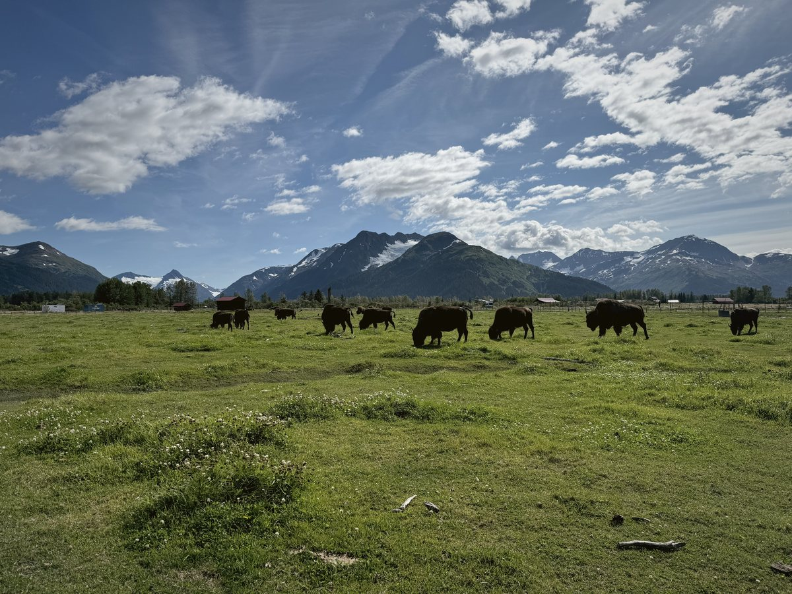
The Ferry Across Prince William Sound
Getting to the ferry is half the story. You reach Whittier through the Anton Anderson Memorial Tunnel, a two-and-a-half-mile, one-lane passage bored straight through a mountain, and the strange part is that cars share it with the train, so it runs one direction at a time on a clock and you actually drive over the railroad tracks to get through. Whittier itself is one of the oddest towns in America. Almost all of its couple hundred residents live in a single fourteen-story building, a former Cold War army barracks, with the post office and city offices tucked inside too. They call it the town under one roof.
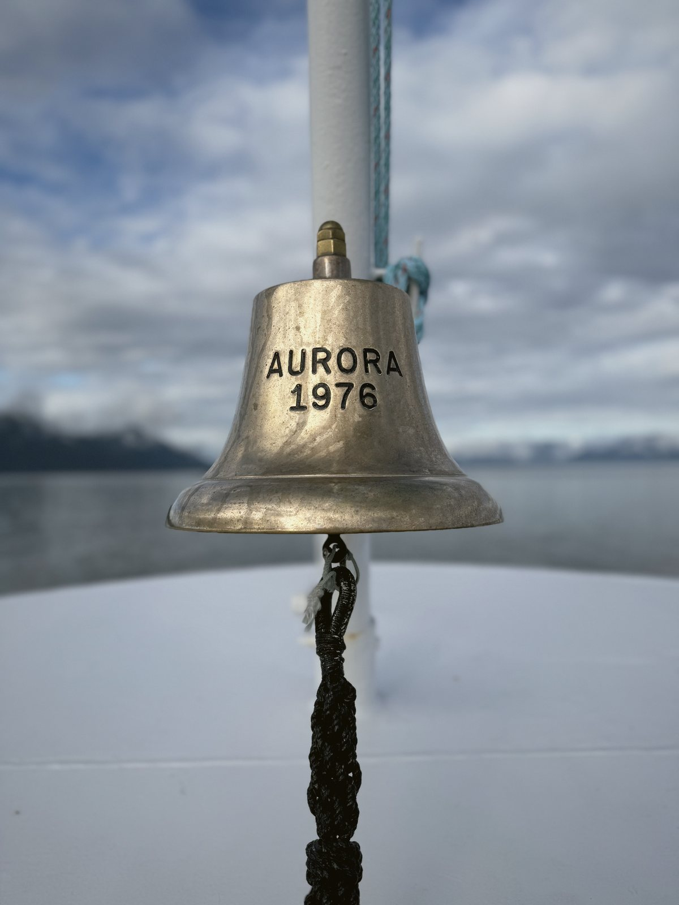
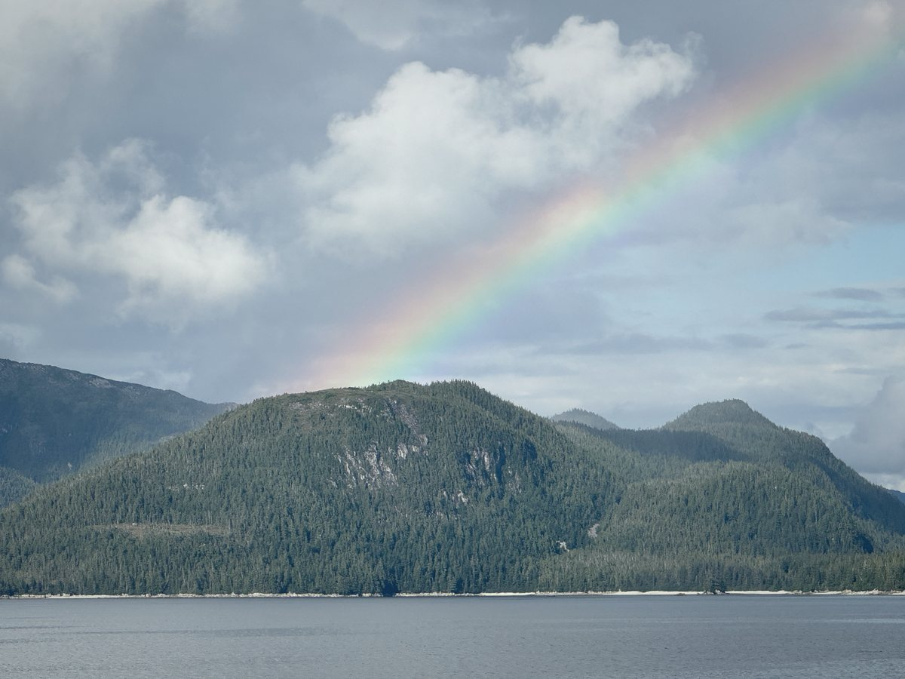
We were early for the ferry, so we filled the time the way you should out here. We did a short hike and drove up Portage Valley to the Williwaw Creek Fish Viewing Platform, where the salmon run every summer and the bears come to meet them. I have never seen anything like it. The creek was so thick with fish that the water itself seemed to move, a low shimmer and vibration as thousands of salmon pushed upstream all at once. Along the banks you could see the ones that had not made it, the remains of the fish the bears had already claimed, the whole brutal, beautiful cycle laid out in a few feet of water.
From there we boarded the Alaska Marine Highway ferry and crossed Prince William Sound toward Valdez before driving on to Copper Center. It turned out to be one of the most peaceful stretches of the whole trip. The ferry is part of the state highway system, so the deck was a quiet mix of locals riding it like a bus and tourists like us, everyone drifting between the railings and the windows with our cars stowed below. Waterfalls poured straight down the fjord walls, and we watched dolphins cut through the water, with plenty more sea life besides, sea otters on their backs, the promise of a whale spout, close enough that it felt like the sound was putting on a show for the ride.
At one point an ice floe drifted across our path and slowed the ferry down. It was glacier ice, calved off the Columbia Glacier, the largest tidewater glacier in this part of Alaska, and it somehow only added to the day, a reminder that out here the water sets the schedule, not us.
There's a quiet heaviness to this water too, if you know its history. This is the sound the Exxon Valdez fouled in 1989. I was a kid when it happened, and I still remember the news footage, seabirds slicked black and being washed by hand, a shoreline gone the color of tar, the sense that something beautiful had been ruined for good. To see it now, so full of life, is its own kind of hope. Recovery is slow and never quite complete, but nature has a way of coming back. Standing there, I felt how resilient and how fragile everything is at once, the water, the wildlife, us. Maybe that is one of the quiet gifts of getting older, that you finally take it in.
Copper Center and Wrangell-St. Elias
We landed for two nights at the Copper River Princess Wilderness Lodge, a grand, remote place set near where the Klutina and Copper Rivers meet, the Wrangell peaks lined up across the valley and the national park visitor center just up the road. It has that middle-of-nowhere-in-the-best-sense feeling, a little like Minam, the kind of lodge some of the national parks do so well. Out here the sky just opens up.
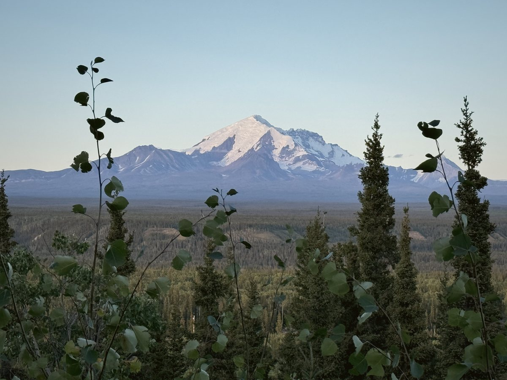
The next day was the one I'd been most nervous and most excited about. Wrangell-St. Elias is the largest national park in the country, bigger than some countries, and the only way to take its measure is from the air. We drove to an airstrip, if you can even call it that, in Chitina and chartered a flight with Wrangell Mountain Air. It felt like calling an Uber, except the Uber was a tiny plane and the driver was a bush pilot lifting the four of us up over the wilderness, the whole valley unspooling under the wings.
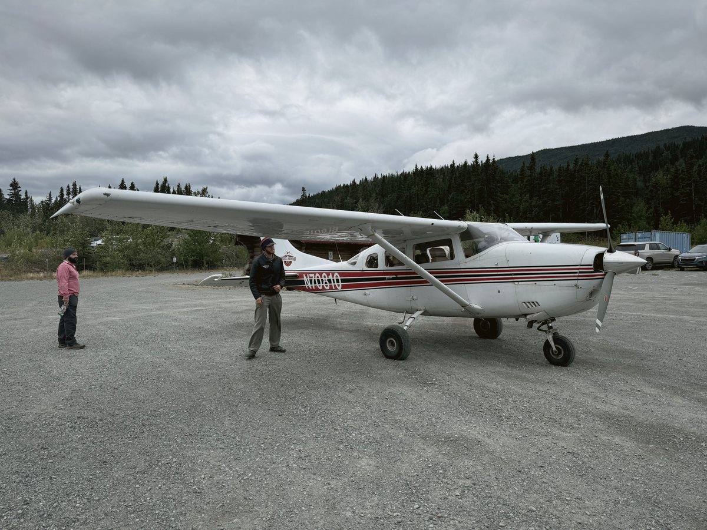
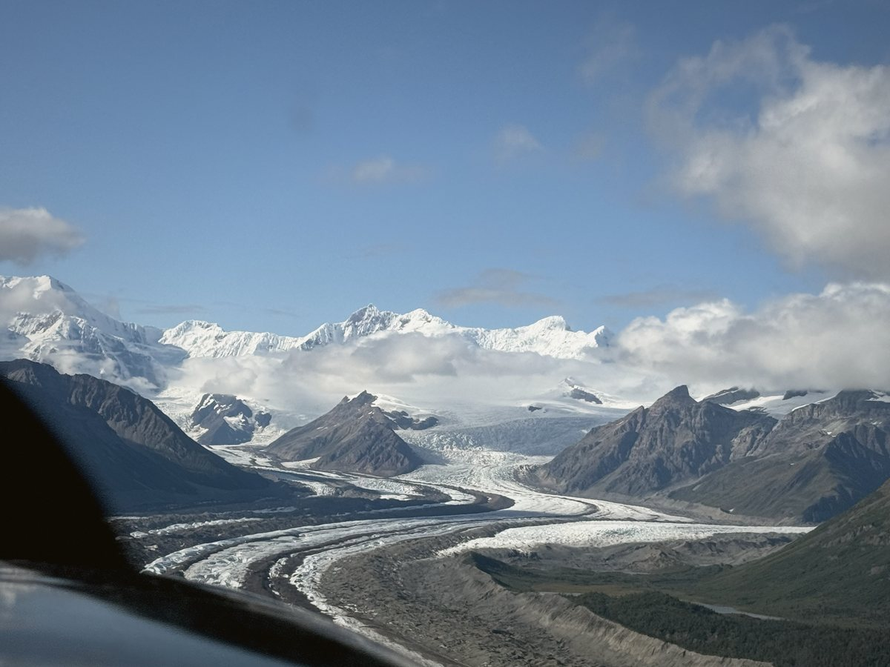
He flew us to Kennecott, an old copper-mining town that sits right at the edge of a glacier, and set us down on what passes for an airstrip out there. We walked up the little town road, found our glacier guide, and hiked out onto the ice.

This was the Root Glacier, and stepping onto it was one of the strangest, most beautiful things we did all trip. We fitted crampons over our shoes and crunched across a blue-and-white river of ice, past crevasses and deep blue meltpools and holes where the water vanishes straight down into the glacier. Waterfalls ran off the rock, and we stopped for lunch and our guide made us hot chocolate and coffee from glacier water.
We even found the glacier mice, soft green balls of moss that form on only a handful of glaciers in the entire world, Alaska, Iceland, and a few far-flung places, and almost nowhere else. Each one is its own little world. Pull it apart and you'd find it packed with microscopic life, water bears and springtails and nematodes all riding along inside. Stranger still, they don't stay put. They inch across the ice in slow, coordinated herds, drifting in the same direction, and a single moss ball can live for years. We crouched over them like they were the most important thing in Alaska, and for a minute, they were.
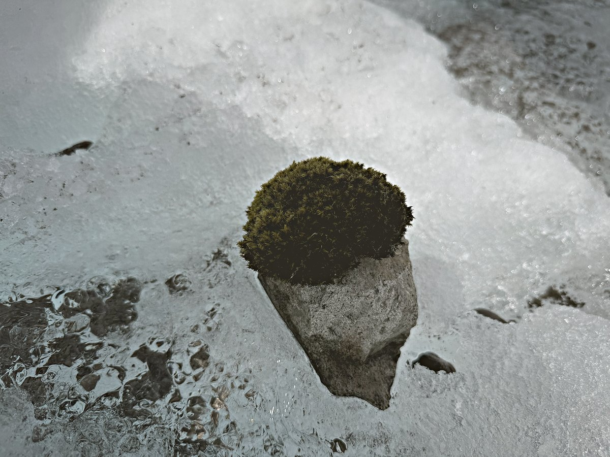
Seward
We looped back through Anchorage and on to Seward, where we finally slowed down and stayed put for three nights at the Windsong Lodge. Seward sits on Resurrection Bay at the edge of Kenai Fjords National Park, a working harbor town where sea otters float in the marina and the mountains come straight down to the water.
We did the short walk out to Exit Glacier, one of the few glaciers you can stroll up to. At the entrance to the park we passed a little motorcade, black Suburbans and Secret Service walking alongside someone clearly important, and we never did find out who. Only in Alaska does the road to a glacier come with a security detail. What stayed with all of us, though, were the markers along the trail, small signs planted where the ice used to reach, each stamped with a year. You walk past 1926, then 1951, then 1998, then 2010, and the glacier is still nowhere close, and by the time you reach it you feel in your body, not just your head, how far and how fast it has pulled back. We saw firsthand how warm it is getting up here, and it landed differently standing there with the kids.
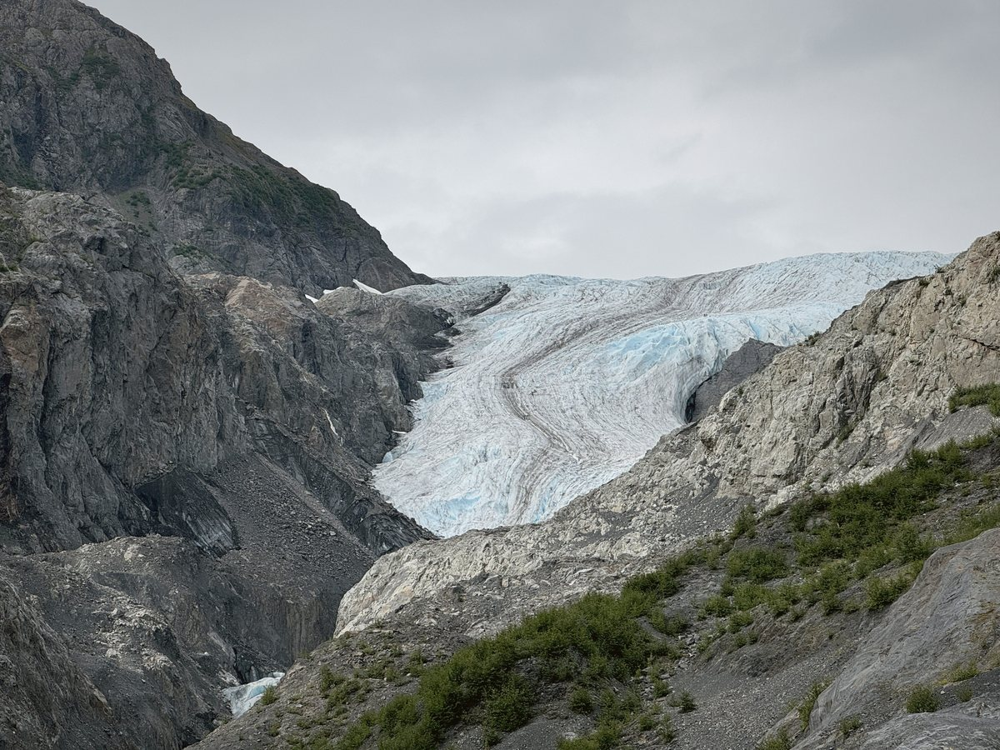
Another day we hiked part of the Lost Lake trail for the big, wide-open views, and loved every step of it.
Back in town, Seward is all harbor, fishing boats and tour boats, sea otters and sea lions out in the bay, bald eagles working the shoreline, Mount Marathon rising straight up behind the streets. We ate our way through the local seafood, including a proper king crab dinner down by the water, cracking legs with the boats bobbing just outside the window.
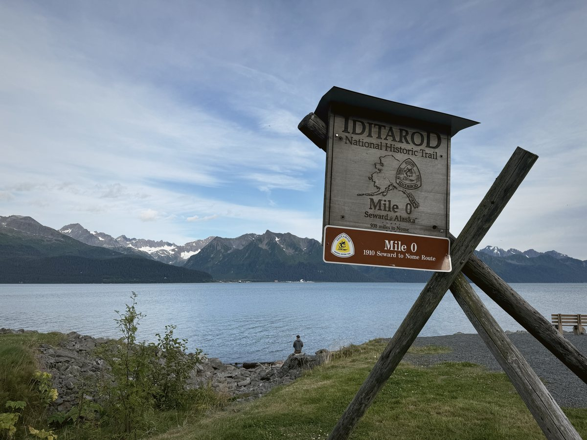
Kenai Fjords
The full day out into Kenai Fjords was one of the most memorable of the whole trip. We booked with Kayak Adventures Worldwide and came down early to board the boat, and from Seward it took a couple of hours by water taxi to reach Aialik Bay. That ride out is its own reward. Fjords are deep, narrow arms of the sea carved by ancient glaciers, sheer rock walls dropping straight into cold green water, and gliding through them you feel very small in the best possible way. The whole way out the wildlife kept coming, humpback whales and orcas, rafts of sea otters, Steller sea lions hauled out on the rocks, bald eagles overhead, and puffins bobbing along the surface like they had been drawn by a child.
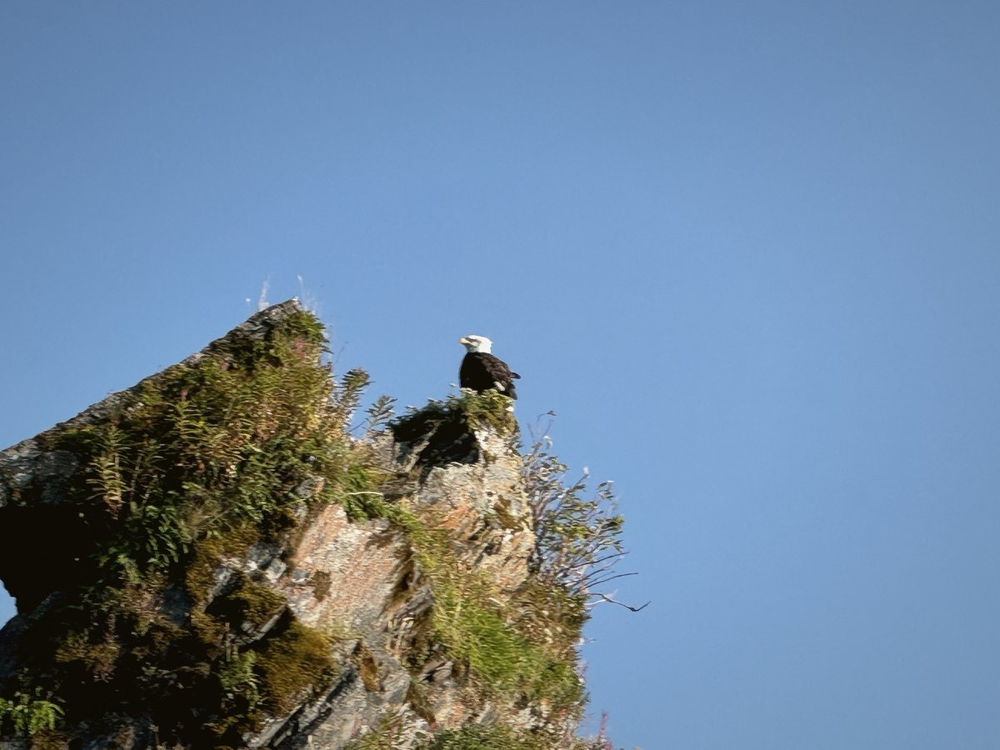
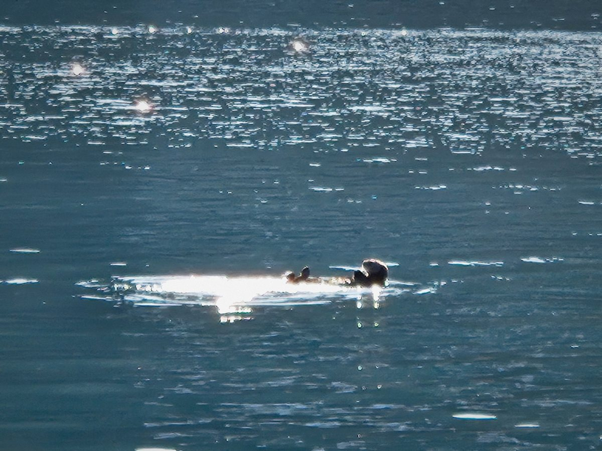
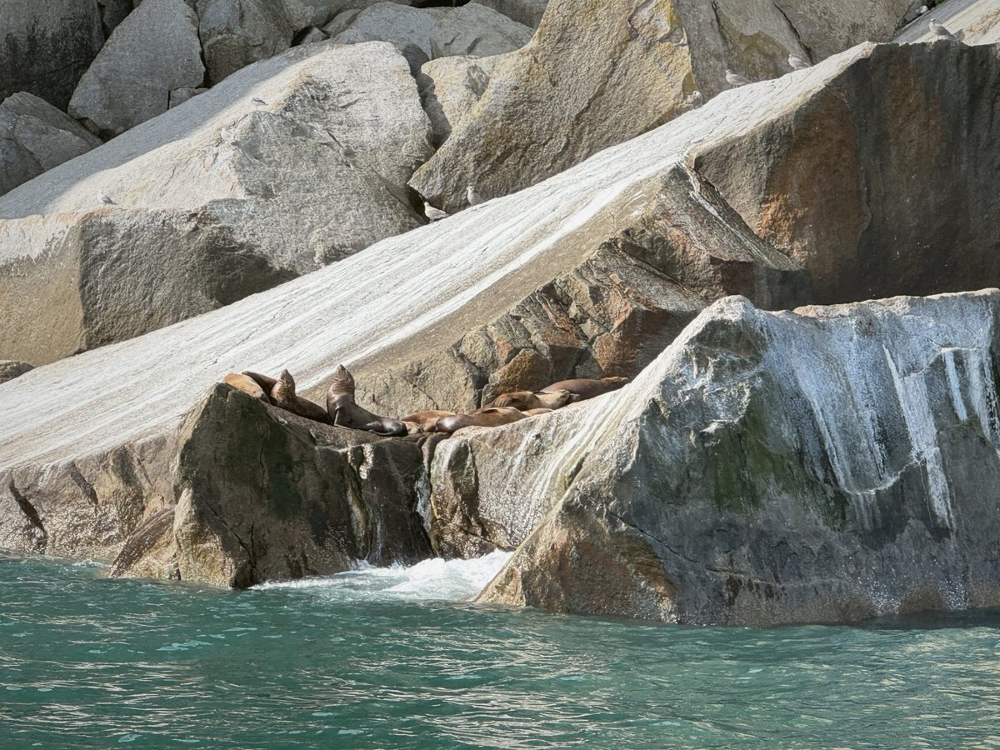
Then came the part I will never forget. The tour carried sea kayaks out with us, and we climbed into them off a gravel beach and set off toward the glacier. I will be honest, I was not good at this. I could not for the life of me figure out how to steer or even keep us moving forward, so we fell further and further behind the rest of the group. Our guide hung back with us the whole time, endlessly patient, and it turned out not to matter one bit. We were dead last the entire paddle and perfectly happy about it, the water freezing and studded with floating ice we had to steer around, the mountains rising straight up on either side, bears wandering the shoreline as we went.
And then the glacier itself. Aialik is the largest and most active tidewater glacier in the park, a two-hundred-foot wall of ice that let go every ten minutes or so. First a crack like thunder rolling across the bay, then a slab peeling off and crashing into the sea, and then the slow-motion sight of the ice dropping into the water and the swell rolling out toward us. It is one of the most impressive things we have ever heard. We ate lunch right there in the kayaks, sitting low and close to the water, and by the end it came to about five miles of paddling. On the way back we wound through quiet coves with sea otters floating right beside us, close enough to see their whiskers.
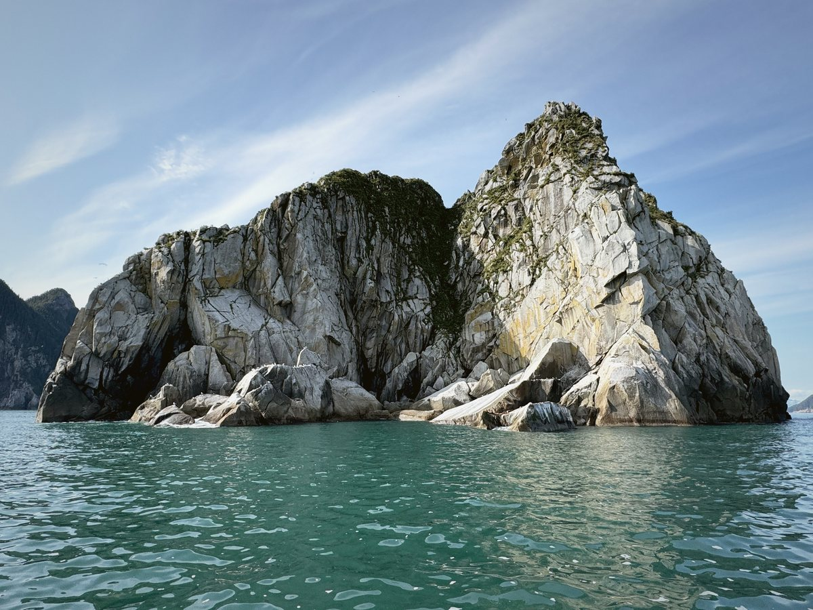
By the time we climbed back onto the boat for the ride home, my son was worn out from the day. He fell asleep on our guide's shoulder, and she let him stay there and nap the whole way back to Seward, every bit as patient with him as she had been with me in the kayak.
The Last Night at Alyeska
For the final night we circled back to Alyeska, and we had dinner at Sakura, the sushi bar tucked into the resort. We did the thing I always hope to do somewhere new, sat right at the counter and got to talking with the chef, and asked the question you can't help asking in a place like this, how do you get through the winters? The long dark, the endless summer light, the way the seasons swing so hard up here. He told us how everyone finds their own rhythm, how you lean on each other and on the small routines that carry you through. It was the kind of unhurried, honest conversation with a stranger that turns out to be the thing that you remember years later.
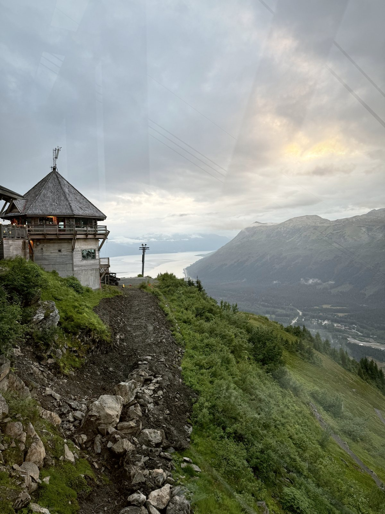
Traveling with an 11- and 13-Year-Old
I will not pretend a trip this ambitious is effortless with kids. There were long drives, early mornings, and the occasional stretch where someone would rather have not been hiking. But Alaska turned out to be almost unfairly good at winning them over, and the things that worked were simple.
We let the wild stuff do the heavy lifting. You can talk to a thirteen-year-old about scenery all day and get a shrug, but put him in a kayak next to a calving glacier, or a tiny plane over a wilderness the size of a country, and he is all in. The biggest, most adventurous days were the ones they never stopped talking about.
We also built in room to breathe. After a week of moving every day or two, three nights in one place in Seward reset all of us. And we let them have their own small freedoms, an afternoon of room service and a movie at the lodge while we slipped off to the spa did as much for the trip as any tour.
People keep asking why Alaska for a fiftieth, and I still do not have a tidy answer. It was not on anyone's list. It came together almost by accident. But somewhere between the glacier we hiked and the one we paddled up to, the bear with his stick and the belugas from the side of the road, all four of us fell for a place none of us expected to love. Some birthdays you spend looking back. This one we spent looking out at ice and water and mountains that made fifty feel less like a number and more like a door. We are already planning the next trip. My son called it his favorite trip ever, and still tells us, often, that this is where he is going to live someday.